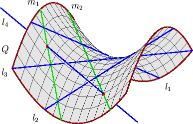
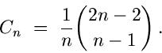

The first non-trivial instance of the Schubert calculus is the question posed at the beginning of Section 3.i.
Three pairwise skew lines l1, l2, and l3 lie on a unique smooth quadric surface Q. There are two families of lines that foliate Q--one family includes l1, l2, and l3 and the other consists of the lines meeting each of l1, l2, and l3. The fourth line l4 meets Q in two points, and each of these points determines a line in the second family. Thus there are 2 lines m1 and m2 in space that meet general lines l1, l2, l3, and l4. Figure 10 shows this configuration.
|  |
| Figure 10: The two lines meeting four general lines in space. |
The classical Schubert calculus is a vast generalization of this problem of four lines. In the 1980's Speiser suggested to Fulton that the classical Schubert calculus may be a good testing ground for Question 3.1. This was also considered by Chiavacci and Escamilla-Castillo [CE-C]. We will discuss increasingly more general versions of the Schubert calculus, and the status of Question 3.1 for each.
Consider first more general problems involving lines.
The space of lines in Pn is a smooth projective
variety of dimension 2n - 2 called the Grassmannian of lines in
Pn.
The set of lines meeting a linear subspace L of dimension
n-1-l has
codimension l in the Grassmannian.
Thus given general linear subspaces
L1, L2, ..., Ls,
of Pn with
the dimension of Li equal to
n-1-li, where we have
l1 + l2 + ... + ls = 2n - 2,
we expect (and there are indeed) finitely many lines in
Pn meeting each linear subspace
L1, L2, ..., Ls.
Schubert [Sch3] discovered
algorithms for computing this number
d(l1,l2,...,Ls)
of lines.
For example, if each li is 1, so that
s = 2n - 2, then this number is the
nth Catalan number§
|  | (4.1) |
These enumerative problems of lines in Pn meeting general linear subspaces furnished the first infinite family of non-trivial enumerative problems known to be fully real.